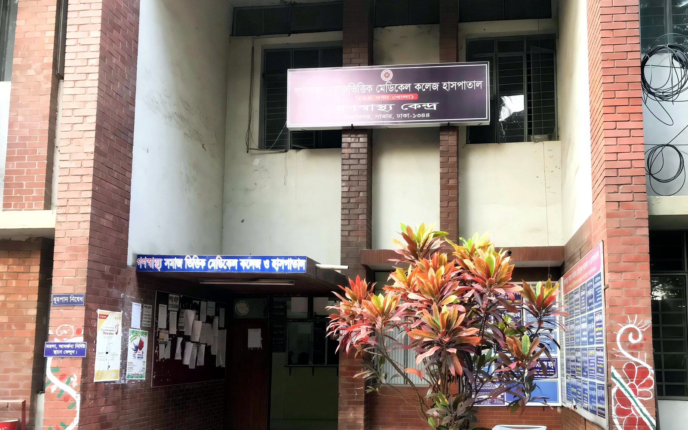

Dr Masrura Jabin
মেডিসিন — সহযোগী অধ্যাপক ও বিভাগীয় প্রধান, মেডিসিন বিভাগ
MBBS, FCPS (Medicine), MD (Nephrology) — নেফ্রোলজি বিশেষজ্ঞ


২৪/৭ জরুরি সেবা
হটলাইন: [নিশ্চিত করা হয়নি]
গণস্বাস্থ্য সমাজ ভিত্তিক মেডিকেল কলেজ হাসপাতাল একটি ২৫০ শয্যার শিক্ষণ হাসপাতাল, ১৯৭২ সালে গণস্বাস্থ্য কেন্দ্রের উদ্যোগে প্রতিষ্ঠিত। সাধারণ মানুষের জন্য সহজলভ্য ও মানসম্মত স্বাস্থ্যসেবা দেওয়াই আমাদের লক্ষ্য।
বিস্তৃত পরিসরে সার্বিক চিকিৎসাসেবা

নিবেদিতপ্রাণ পেশাজীবীদের অভিজ্ঞ সেবা
মেডিসিন — সহযোগী অধ্যাপক ও বিভাগীয় প্রধান, মেডিসিন বিভাগ
MBBS, FCPS (Medicine), MD (Nephrology) — নেফ্রোলজি বিশেষজ্ঞ
সার্জারি — সহযোগী অধ্যাপক
চক্ষু — সহযোগী অধ্যাপক
আমাদের হাসপাতাল সম্পর্কে
গণস্বাস্থ্য সমাজ ভিত্তিক মেডিকেল কলেজ হাসপাতাল একটি ২৫০ শয্যার শিক্ষণ হাসপাতাল, ১৯৭২ সালে গণস্বাস্থ্য কেন্দ্রের উদ্যোগে প্রতিষ্ঠিত। এটি সমাজের জন্য মানসম্মত স্বাস্থ্যসেবা ও চিকিৎসা শিক্ষা দেওয়ার বৃহত্তর প্রচেষ্টার অংশ।
হাসপাতালের ইতিহাস গণস্বাস্থ্য কেন্দ্রের (জিকে) সঙ্গে জড়িত। ১৯৭১ সালে মেলাঘর, ত্রিপুরায় ৪৮০ শয্যার বাংলাদেশ ফিল্ড হাসপাতাল পরিচালিত হয়েছিল। ১৯৭২ সালে সাভারে গণস্বাস্থ্য কেন্দ্র আসে এবং সাভার হাসপাতাল জিকের কমিউনিটি-ভিত্তিক স্বাস্থ্যসেবার রেফারেল হাসপাতাল হিসেবে কাজ করে।
ডা. জাফরুল্লাহ চৌধুরী (২৭ ডিসেম্বর ১৯৪১ – ১১ এপ্রিল ২০২৩) ছিলেন গণস্বাস্থ্য কেন্দ্রের প্রতিষ্ঠাতা এবং বাংলাদেশের জনস্বাস্থ্য আন্দোলনের অগ্রদূত। ১৯৭১ সালে মুক্তিযুদ্ধের সময় তিনি ও তাঁর সহকর্মীরা ত্রিপুরার মেলাঘরে ৪৮০ শয্যার বাংলাদেশ ফিল্ড হাসপাতাল পরিচালনা করেন, যেখানে আহত মুক্তিযোদ্ধাদের চিকিৎসা দেওয়া হয়। ১৯৭২ সালে তিনি সাভারে গণস্বাস্থ্য কেন্দ্র প্রতিষ্ঠা করেন — সাধারণ ও দরিদ্র মানুষের জন্য সহজলভ্য স্বাস্থ্যসেবা দেওয়াই ছিল তাঁর জীবনের লক্ষ্য, তাই তাঁকে ‘গরিব মানুষের ডাক্তার’ বলা হতো। ১৯৮২ সালে বাংলাদেশের জাতীয় ওষুধ নীতি প্রণয়নেও তাঁর গুরুত্বপূর্ণ ভূমিকা ছিল।
গণস্বাস্থ্য কেন্দ্রের প্রতিষ্ঠাতা, বাংলাদেশের জনস্বাস্থ্য আন্দোলনের অগ্রদূত
ধাপ: বিভাগ → তারিখ → অনুরোধ → অফিস থেকে নিশ্চিতকরণ। অনুরোধ করলেই অ্যাপয়েন্টমেন্ট নিশ্চিত হয় না।
উদাহরণ: CBC, ESR, Peripheral Blood Film। হাসপাতাল যাচাই করেনি।
উদাহরণ: Blood Glucose, Creatinine, Urea, Liver Function Tests। হাসপাতাল যাচাই করেনি।
উদাহরণ: HBsAg, Widal। হাসপাতাল যাচাই করেনি।
উদাহরণ: Urine R/E, Urine C/S, Stool R/E। হাসপাতাল যাচাই করেনি।
উদাহরণ: X-ray, Ultrasound। হাসপাতাল যাচাই করেনি।
উদাহরণ: ECG, Echocardiography। হাসপাতাল যাচাই করেনি।
২৪ ঘণ্টা জরুরি সেবা।
২টি সুসজ্জিত ওটি; সিজারিয়ানসহ জরুরি প্রসূতি সেবা।
ব্লাড ব্যাংক সেবা।
২টি অ্যাম্বুলেন্স প্রস্তুত।
বার্ন, আয়ুর্বেদ, যোগা, আকুপাংচার, কুষ্ঠ, পিএইচসিসহ ইনডোর সুবিধা।
প্রতি মাসে ১টির বেশি বিশেষায়িত স্বাস্থ্য শিবির।
উপরের সেবাগুলো গণস্বাস্থ্য কেন্দ্রের অফিসিয়াল হেলথ পাতা অনুযায়ী।
বিভাগের তালিকা থেকে আপনার সমস্যার বিভাগ বাছুন।
চিকিৎসক তালিকা থেকে চেম্বারের দিন ও সময় দেখুন — তালিকা আসার পর।
ফরম পূরণ করুন। অনুরোধ করলেই অ্যাপয়েন্টমেন্ট নিশ্চিত হয় না, অফিস নিশ্চিত করবে।
জরুরি অবস্থায় সরাসরি হাসপাতালে আসুন।
উন্নত সেবার জন্য আধুনিক চিকিৎসাসেবা
আমাদের সর্বশেষ কার্যক্রম সম্পর্কে জানুন
মির্জানগর, সাভার — ঢাকা-আরিচা মহাসড়কের পাশে।
আমরা আপনাকে সাহায্য করতে এখানে আছি
মির্জানগর, ভায়া সাভার ক্যান্টনমেন্ট, আশুলিয়া, সাভার, ঢাকা-১৩৪৪
জরুরি: [নিশ্চিত করা হয়নি]
gsvmchospital@gmail.com
ফোন: ০২৭৭৯২২২৫